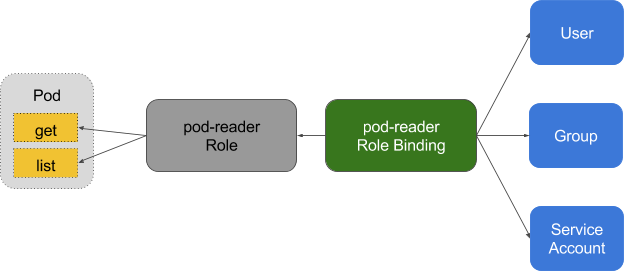

基于角色的访问控制机制（Role-Based Access Control，RBAC），在 RBAC 中，权限与角色相关联，用户通过成为适当角色的成员而得到这些角色的权限。这就极大地简化了权限的管理。
使用 RBAC 可以很方便的更新访问授权策略而不用重启集群。
从 Kubernetes 1.8 开始，RBAC 进入稳定版，其 API 为 rbac.authorization.k8s.io/v1。
在使用 RBAC 时，只需要在启动 kube-apiserver 时配置 --authorization-mode=RBAC 即可。
RBAC API 所定义的四种顶级类型。用户可以像使用其他 Kubernetes API 资源一样 （例如通过 kubectl、API 调用等）与这些资源进行交互。
在 RBAC 中定义了两个对象，用于描述在用户和资源之间的连接权限。
Role（角色）是一系列权限的集合，例如一个角色可以包含读取 Pod 的权限和列出 Pod 的权限。Role 只能用来给某个特定 namespace 中的资源作鉴权，对多 namespace 和集群级的资源或者
是非资源类的 API（如 /healthz）使用 ClusterRole。
ClusterRole 对象可以授予与 Role 对象相同的权限，但由于它们属于集群范围对象，也可以使用它们授予对以下几种资源的访问权限：
node）endpoint（例如 /healthz）pod，需要运行命令 kubectl get pods --all-namespaces 来查询集群中所有的 pod）1 | kind: Role |
上面的例子描述了 ”default” 命名空间中的一个 Role 对象的定义，用于授予对 pod 的读访问权限。
1 | kind: ClusterRole |
上面例子中的 ClusterRole 定义可用于授予用户对某一特定命名空间，或者所有命名空间中的 secret（取决于其绑定方式）的读访问权限
RoleBinding 把 Role 或ClusterRole 中定义的各种权限映射到 User，Service Account 或者 Group，从而让这些用户继承角色在 namespace 中的权限。ClusterRoleBinding 让用户继承 ClusterRole 在整个集群中的权限。

RoleBinding 可以引用在同一命名空间内定义的 Role 对象。1
2
3
4
5
6
7
8
9
10
11
12
13
14# 以下角色绑定定义将允许用户 "jane" 从 "default" 命名空间中读取 pod。
kind: RoleBinding
apiVersion: rbac.authorization.k8s.io/v1beta1
metadata:
name: read-pods
namespace: default
subjects:
- kind: User
name: jane
apiGroup: rbac.authorization.k8s.io
roleRef:
kind: Role
name: pod-reader
apiGroup: rbac.authorization.k8s.io
RoleBinding 对象也可以引用一个 ClusterRole 对象用于在 RoleBinding 所在的命名空间内授予用户对所引用的 ClusterRole 中定义的命名空间资源的访问权限。
这一点允许管理员在整个集群范围内首先定义一组通用的角色，然后再在不同的命名空间中复用这些角色。
例如，尽管下面示例中的 RoleBinding 引用的是一个 ClusterRole 对象，但是用户 ”dave” （即角色绑定主体）还是只能读取 ”development” 命名空间中的
secret（即 RoleBinding 所在的命名空间）。1
2
3
4
5
6
7
8
9
10
11
12
13kind: RoleBinding
apiVersion: rbac.authorization.k8s.io/v1beta1
metadata:
name: read-secrets
namespace: development # 这里表明仅授权读取 "development" 命名空间中的资源。
subjects:
- kind: User
name: dave
apiGroup: rbac.authorization.k8s.io
roleRef:
kind: ClusterRole
name: secret-reader
apiGroup: rbac.authorization.k8s.io
最后，可以使用 ClusterRoleBinding 在集群级别和所有命名空间中授予权限。下面示例中所定义的 ClusterRoleBinding 允许在用户组 ”manager” 中的任何用户都可以读取
集群中任何命名空间中的 secret。
1 | kind: ClusterRoleBinding |
从 v1.9 开始，在 ClusterRole 中可以通过 aggregationRule 来与其他 ClusterRole 聚合使用：1
2
3
4
5
6
7
8
9
10
11
12
13
14
15
16
17
18
19
20
21kind: ClusterRole
apiVersion: rbac.authorization.k8s.io/v1
metadata:
name: monitoring
aggregationRule:
clusterRoleSelectors:
- matchLabels:
rbac.example.com/aggregate-to-monitoring: "true"
rules: [] # Rules are automatically filled in by the controller manager.
kind: ClusterRole
apiVersion: rbac.authorization.k8s.io/v1
metadata:
name: monitoring-endpoints
labels:
rbac.example.com/aggregate-to-monitoring: "true"
# These rules will be added to the "monitoring" role.
rules:
- apiGroups: [""]
resources: ["services", "endpoints", "pods"]
verbs: ["get", "list", "watch"]
大多数资源由代表其名字的字符串表示，例如 ”pods”，就像它们出现在相关 API endpoint 的 URL 中一样。然而，有一些 Kubernetes API 还 包含了”子资源”，比如 pod 的 logs。
在 Kubernetes 中，pod logs endpoint 的 URL 格式为：1
GET /api/v1/namespaces/{namespace}/pods/{name}/log
”pods” 是命名空间资源，而 ”log” 是 pods 的子资源。为了在 RBAC Role 中表示出这一点，我们需要使用斜线来划分资源与子资源。
如果需要 Role 绑定主体读取 pods 以及 pods log（如果不显示指定子资源，那么子资源是没有权限访问的），需要定义以下 Role：1
2
3
4
5
6
7
8
9kind: Role
apiVersion: rbac.authorization.k8s.io/v1beta1
metadata:
namespace: default
name: pod-and-pod-logs-reader
rules:
- apiGroups: [""]
resources: ["pods", "pods/log"]
verbs: ["get", "list"]
通过 resourceNames 列表，Role可以针对不同种类的请求根据资源名引用资源实例。当指定了 resourceNames 列表时，不同动作种类的请求的权限，
如使用 ”get”、”delete”、”update” 以及 ”patch” 等动词的请求，将被限定到资源列表中所包含的资源实例上。 例如，如果需要限定一个角色绑定主体
只能 ”get” 或者 ”update” 一个名为 “my-configmap” 的 configmap 时，可以定义以下角色：
1 | kind: Role |
使用 kubectl api-resources 查看所有 kubernetes 资源对象所属的 apiGroups：1
2
3
4
5
6
7
8
9
10
11
12
13
14
15
16
17
18
19
20
21
22
23
24
25
26
27$ kubectl api-resources
NAME SHORTNAMES APIGROUP NAMESPACED KIND
bindings true Binding
componentstatuses cs false ComponentStatus
configmaps cm true ConfigMap
endpoints ep true Endpoints
events ev true Event
limitranges limits true LimitRange
namespaces ns false Namespace
nodes no false Node
persistentvolumeclaims pvc true PersistentVolumeClaim
persistentvolumes pv false PersistentVolume
pods po true Pod
podtemplates true PodTemplate
replicationcontrollers rc true ReplicationController
resourcequotas quota true ResourceQuota
secrets true Secret
serviceaccounts sa true ServiceAccount
services svc true Service
mutatingwebhookconfigurations admissionregistration.k8s.io false MutatingWebhookConfiguration
validatingwebhookconfigurations admissionregistration.k8s.io false ValidatingWebhookConfiguration
customresourcedefinitions crd,crds apiextensions.k8s.io false CustomResourceDefinition
apiservices apiregistration.k8s.io false APIService
controllerrevisions apps true ControllerRevision
daemonsets ds apps true DaemonSet
deployments deploy apps true Deployment
...
如果 apiGroups: [""] 则表示 core API Group。
允许读取 core API Group 中定义的资源 ”pods”：
1 | rules: |
允许读写在 ”extensions” 和 ”apps” API Group 中定义的 ”deployments”：1
2
3
4rules:
- apiGroups: ["extensions", "apps"]
resources: ["deployments"]
verbs: ["get", "list", "watch", "create", "update", "patch", "delete"]
允许读取 ”pods” 以及读写 ”jobs”：1
2
3
4
5
6
7rules:
- apiGroups: [""]
resources: ["pods"]
verbs: ["get", "list", "watch"]
- apiGroups: ["batch", "extensions"]
resources: ["jobs"]
verbs: ["get", "list", "watch", "create", "update", "patch", "delete"]
允许读取一个名为 ”my-config” 的 ConfigMap 实例（需要将其通过 RoleBinding 绑定从而限制针对某一个命名空间中定义的一个 ConfigMap 实例的访问）：1
2
3
4
5rules:
- apiGroups: [""]
resources: ["configmaps"]
resourceNames: ["my-config"]
verbs: ["get"]
允许读取 core API Group 中的 ”nodes” 资源（由于 Node 是集群级别资源，所以此 ClusterRole 定义需要与一个 ClusterRoleBinding 绑定才能有效）：1
2
3
4rules:
- apiGroups: [""]
resources: ["nodes"]
verbs: ["get", "list", "watch"]
允许对非资源 endpoint /healthz 及其所有子路径的 GET 和 POST 请求（此 ClusterRole 定义需要与一个 ClusterRoleBinding 绑定才能有效）：1
2
3rules:
- nonResourceURLs: ["/healthz", "/healthz/*"] # 在非资源 URL 中，'*' 代表后缀通配符
verbs: ["get", "post"]
RoleBinding 或者 ClusterRoleBinding 将 Role 绑定到角色绑定主体（Subject）。 角色绑定主体可以是用户组（Group）、用户（User）或者服务账户（Service Accounts）。
用户由字符串表示。可以是纯粹的用户名，例如 ”alice”、电子邮件风格的名字，如 `bob@example.com或者是用字符串表示的数字id。由 Kubernetes 管理员配置
[认证模块](https://k8smeetup.github.io/docs/admin/authentication/)以产生所需格式的用户名。对于用户名，RBAC 授权系统不要求任何特定的格式。然而，
前缀 **system:` 是为 Kubernetes 系统使用而保留的**，所以管理员应该确保用户名不会意外地包含这个前缀。
Kubernetes 中的用户组信息由授权模块提供。用户组与用户一样由字符串表示。Kubernetes 对用户组字符串没有格式要求，但前缀 system: 同样是被系统保留的。
在认证时，ServiceAccount 的用户名格式为 system:serviceaccount:(NAMESPACE):(SERVICEACCOUNT)，并从属于两个 group：system:serviceaccounts
和 system:serviceaccounts:(NAMESPACE)。
以下示例中，仅截取展示了 RoleBinding 的 subjects 字段。
一个名为 `alice@example.com` 的用户：1
2
3
4subjects:
- kind: User
name: "alice@example.com"
apiGroup: rbac.authorization.k8s.io
一个名为 frontend-admins 的用户组：1
2
3
4subjects:
- kind: Group
name: "frontend-admins"
apiGroup: rbac.authorization.k8s.io
kube-system 命名空间中的默认服务账户：1
2
3
4subjects:
- kind: ServiceAccount
name: default
namespace: kube-system
名为 qa 命名空间中的所有服务账户：1
2
3
4subjects:
- kind: Group
name: system:serviceaccounts:qa
apiGroup: rbac.authorization.k8s.io
在集群中的所有服务账户：1
2
3
4subjects:
- kind: Group
name: system:serviceaccounts
apiGroup: rbac.authorization.k8s.io
所有认证过的用户（version 1.5+）：1
2
3
4subjects:
- kind: Group
name: system:authenticated
apiGroup: rbac.authorization.k8s.io
所有未认证的用户（version 1.5+）：1
2
3
4subjects:
- kind: Group
name: system:unauthenticated
apiGroup: rbac.authorization.k8s.io
所有用户（version 1.5+）：1
2
3
4
5
6
7subjects:
- kind: Group
name: system:authenticated
apiGroup: rbac.authorization.k8s.io
- kind: Group
name: system:unauthenticated
apiGroup: rbac.authorization.k8s.io
RBAC 现在被 Kubernetes 深度集成， API Server 会创建一组默认的 ClusterRole 和 ClusterRoleBinding 对象。 这些默认对象中有许多包含 system: 前缀，表明这些资源由 Kubernetes 基础组件”拥有”。
对这些资源的修改可能导致非功能性集群（non-functional cluster）。一个例子是 system:node ClusterRole对象。这个 ClusterRole 定义了 kubelets 的权限。如果这个角色被修改，
可能会导致 kubelets 无法正常工作。
所有默认的 ClusterRole 和 ClusterRoleBinding 对象都会被标记为 kubernetes.io/bootstrapping=rbac-defaults。
使用 kubectl get clusterroles --namespace=kube-system 查看 ClusterRole。
其他的内置角色可以参考 default-roles-and-role-bindings。
一些默认角色并不包含 system: 前缀，它们是面向用户的角色。
1 | apiVersion: rbac.authorization.k8s.io/v1 |
上面的例子，core 命名空间下名为 cdf-deployer 的 ServiceAccount 被绑定到了默认的 ClusterRole cluster-admin 上。kube-system 命名空间下名为 heapster-apiserver 的 ServiceAccount 被绑定到了默认的 ClusterRole system:heapster 上。
面向用户的角色：
cluster-admin，超级用户权限，允许对任何资源执行任何操作。admin，允许针对命名空间内大部分资源的读写访问，包括在命名空间内创建角色与角色绑定的能力。但不允许对资源配额（resource quota）或者命名空间本身的写访问。edit，允许对某一个命名空间内大部分对象的读写访问，但不允许查看或者修改角色或者角色绑定。view，允许对某一个命名空间内大部分对象的只读访问。不允许查看角色或者角色绑定。 由于可扩散性等原因，不允许查看 secret 资源。所谓 Permissive RBAC 是指授权给所有的 Service Accounts 管理员权限。不推荐的配置。
1 | kubectl create clusterrolebinding permissive-binding \ |